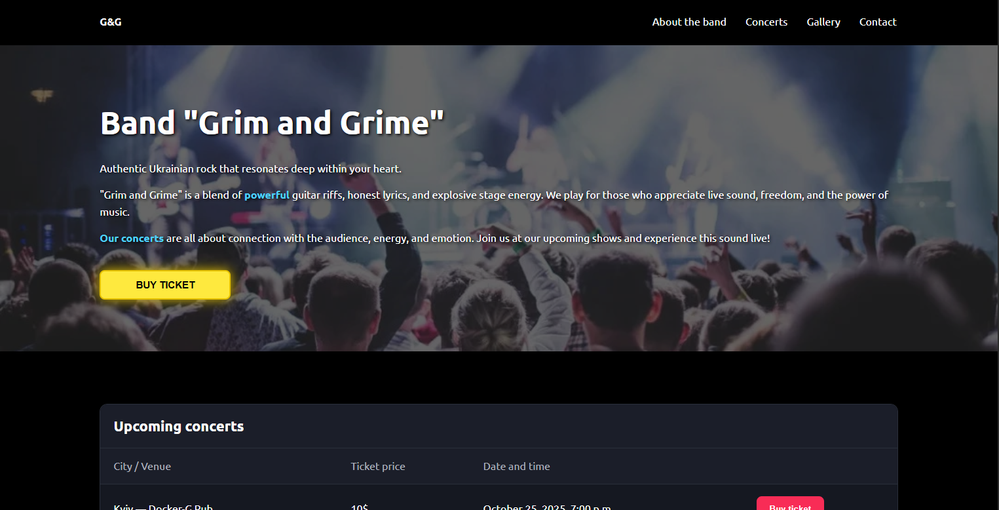
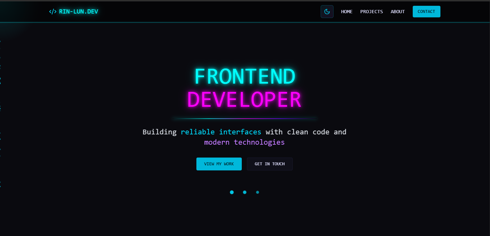

Responsive landing page for a Ukrainian rock band with semantic HTML, CSS Grid/Flexbox, form validation, and optimized performance.
- HTML5
- CSS3
- JavaScript
Real projects showcasing clean code and modern development

Responsive landing page for a Ukrainian rock band with semantic HTML, CSS Grid/Flexbox, form validation, and optimized performance.

Modern cyberpunk-themed portfolio built with React and Tailwind CSS, featuring smooth animations and responsive design.
Building the future, one line at a time
I've been developing frontend skills for about a year, focusing on creating reliable and maintainable interfaces. My priority isn't just implementing functionality, but code cleanliness, structure, and the predictability of the system's behavior.
I have experience with key stages of UI development: from semantic responsive layout to implementing interactive JavaScript and React logic.
I take a systematic approach to tasks: it’s important for me to understand how a system works “from the inside” before I begin implementing it. I pay close attention to details, work constructively with feedback, and am focused on sustainable growth.
HTML5, CSS3, JavaScript (ES6+), React with hooks and component lifecycle
Visual hierarchy, typography, responsive design, and accessibility
Focus on code structure, maintainability, and predictable system behavior
Systematic approach, attention to detail, and constructive with feedback